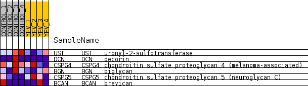
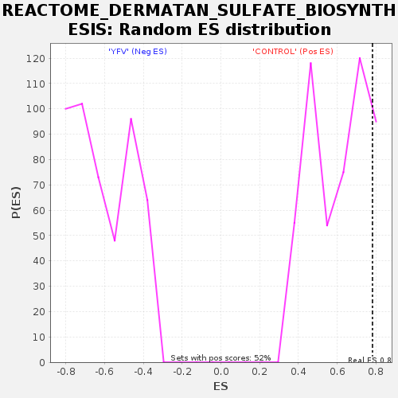

Profile of the Running ES Score & Positions of GeneSet Members on the Rank Ordered List
| Dataset | MATRIZ_GSE99081_collapsed_to_symbols.gsea_CLASE_99081.cls#CONTROL_versus_YFV |
| Phenotype | gsea_CLASE_99081.cls#CONTROL_versus_YFV |
| Upregulated in class | CONTROL |
| GeneSet | REACTOME_DERMATAN_SULFATE_BIOSYNTHESIS |
| Enrichment Score (ES) | 0.7821049 |
| Normalized Enrichment Score (NES) | 1.2801107 |
| Nominal p-value | 0.11025145 |
| FDR q-value | 0.96485853 |
| FWER p-Value | 1.0 |
| SYMBOL | TITLE | RANK IN GENE LIST | RANK METRIC SCORE | RUNNING ES | CORE ENRICHMENT | |
|---|---|---|---|---|---|---|
| 1 | UST | uronyl-2-sulfotransferase | 630 | 0.768 | 0.3439 | Yes |
| 2 | DCN | decorin | 1713 | 0.500 | 0.5264 | Yes |
| 3 | CSPG4 | chondroitin sulfate proteoglycan 4 (melanoma-associated) | 2221 | 0.453 | 0.7206 | Yes |
| 4 | BGN | biglycan | 3532 | 0.285 | 0.7821 | Yes |
| 5 | CSPG5 | chondroitin sulfate proteoglycan 5 (neuroglycan C) | 9334 | -0.000 | 0.4248 | No |
| 6 | BCAN | brevican | 9478 | -0.001 | 0.4165 | No |

